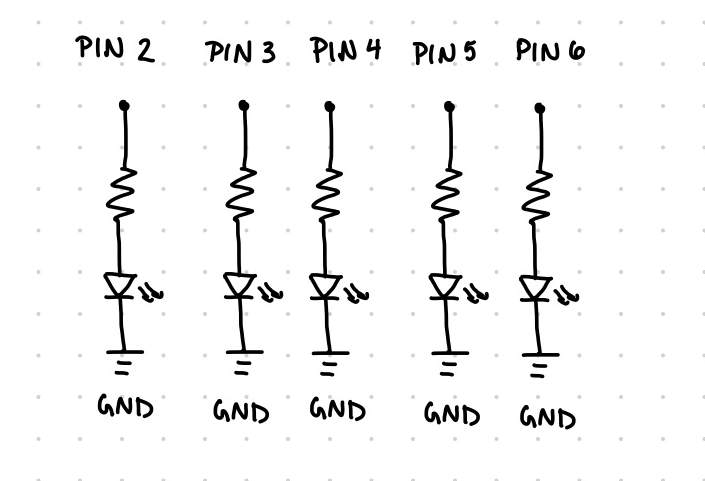

Darby's A1 Blink! Assignment
Schematic

This is a schematic of the circuit that I built for this project. I decided to use 220 Ohm resistors because I calculated that a 150 Ohm resistance was needed for the red and green LED lights, so I used a 220 Ohm resistor to provide a safe current flow..

These are the calculations that I used to determine which resistor to use. I knew that the current across the circuit must be 20mA because Kirchoff's Law states that the current going through a simple series loop is constant.
Circuit

This is a picture of the actual circuit that I built on a breadboard. I lined up each light connected to different pins because ...
Code
The following code was written for this assignment using the Arduino IDE:
// This variable initializes the time between blinking lights to be 150 miliseconds:
int timer = 150;
void setup() {
// Loop through all pins to intialize them:
for (int thisPin = 2; thisPin < 7; thisPin++) {
// Initialize each pin:
pinMode(thisPin, OUTPUT);
}
}
void loop() {
// This loop repeates 8 times, it turns on each light in a pattern:
for (int num = 0; num < 8; num++) {
// Turn the LED connected to pin 5 on:
digitalWrite(5, HIGH);
// Wait for 150 miliseconds
delay(timer);
// Turn the LED connected to pin 5 off:
digitalWrite(5, LOW);
// Wait for 100 miliseconds
delay(100);
// Turn the LED connected to pin 6 on:
digitalWrite(6, HIGH);
// Wait for 150 miliseconds
delay(timer);
// Turn the LED connected to pin 6 off:
digitalWrite(6, LOW);
// Wait for 200 miliseconds
delay(200);
// Turn the LED connected to pin 3 on:
digitalWrite(3, HIGH);
// Wait for 150 miliseconds
delay(timer);
// Turn the LED connected to pin 3 off:
digitalWrite(3, LOW);
// Wait for 100 miliseconds
delay(100);
// Turn the LED connected to pin 4 on:
digitalWrite(4, HIGH);
// Wait for 150 miliseconds
delay(timer);
// Turn the LED connected to pin 4 off:
digitalWrite(4, LOW);
// Wait for 75 miliseconds
delay(75);
// Turn the LED connected to pin 2 on:
digitalWrite(2, HIGH);
// Turn last note on for longer (200 miliseconds):
delay(200);
// Turn the LED connected to pin 2 off:
digitalWrite(2, LOW);
// Wait for 150 miliseconds
delay(timer);
}
// Wait 4 seconds before repeating the pattern:
delay(4000);
}
Animation
Here is an animated gif of the lights blinking

I have also included a video that shows how the lights can be synced up with the song.
INCLUDE VIDEO HERE
Questions
1: Draw a graph where the X axis is time and the Y axis is voltage across the LEDs. Draw a line for each of your 3 LEDs.
2: How many LEDs could you blink independently with your Arduino? How much current would that draw?
3: How fast do you need to blink your LEDs until you no longer can tell that they are blinking?
4: Did you use AI tools in completing this assignment? If yes, please provide details on how/when, as well as a brief reflection. If no, you can either leave this question blank, or provide other information if you'd like.